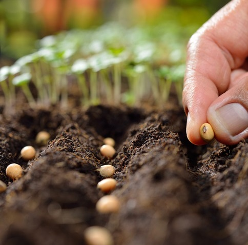
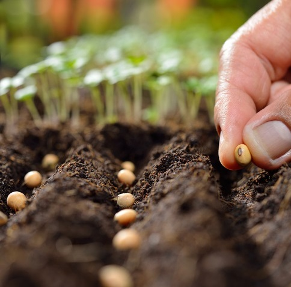

Paso a Paso tips para tu huerta
 


-
1. Selecciona el lugar adecuado
Cuanto más sol y más luz, mejor. Limpia el terreno de malezas, piedras, etc. Coloca los bancales (basta con 5), con 30 o 40 cm de separación. Y no muevas la tierra: sólo integra los terrones con el suelo y empareja con rastrillo. 2. Elige las plantas
En las huertas caseras hay que tener en cuenta el calendario de siembra local. Conviene empezar con hortalizas ya que son fáciles de sembrar “al voleo” y de su flor salen nuevas semillas.3. Introduce sustrato
Fabrica tu propio abono con restos orgánicos. Échalos en la tierra en forma pareja y riega. También puedes usar una compostera.4. Elige la forma de siembra
Siembra juntas plantas que se benefician entre sí porque se complementan con sus nutrientes y repelen insectos.-
5.Elige:
-
Siembra directa (echando semillas en la tierra):
crecen muchas plantas en un mismo lugar. Una vez al mes, escoge las más fuertes y arranca las otras. -
Siembra por almácigos:
En recipientes pequeños, coloca tierra, compost y arena para drenar. Pon un par de semillas y cuando tengas una plantita, transplántala a su lugar definitivo, a los 30 a 45 días.
-
-
6. Riego, control de plagas y cosecha
En verano hay que regar las huertas caseras dos veces al día (Infobae, 2020) cuando no hay sol. En invierno, cada tres días. Conviene implementar riego por goteo para utilizar menos cantidad de agua. Para controlar a los bichos, puedes hacer repelentes naturales (con jabón blanco, por ejemplo) o usar combinaciones de plantas que espanten a los insectos. En primavera y verano todo crece rápido y hay frutos coloridos. En otoño e invierno, crecen verduras de hoja y tardan más en crecer.